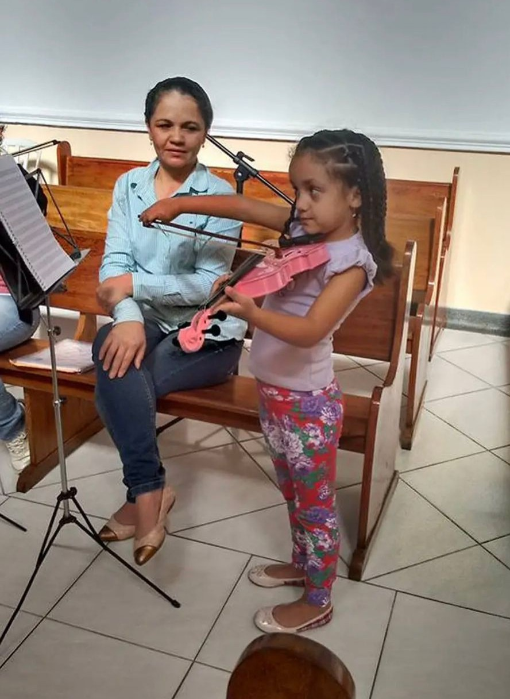
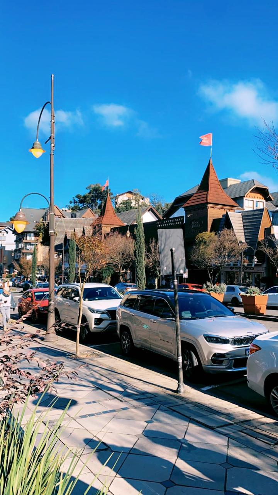
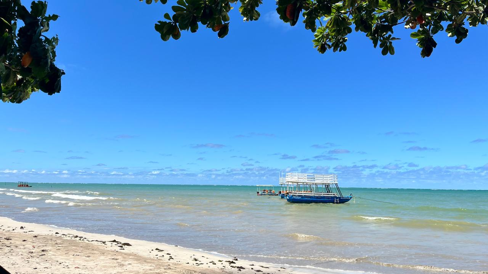
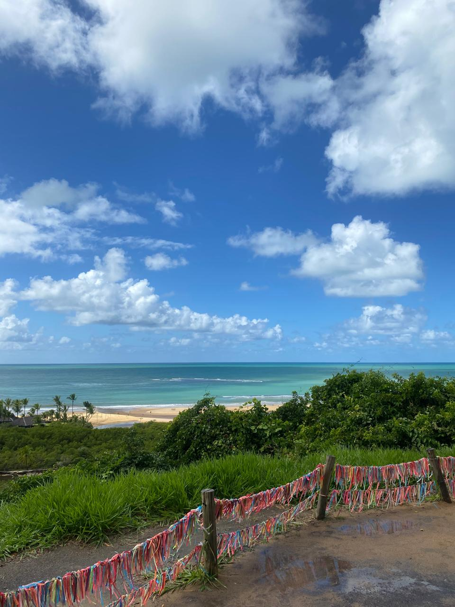

Curiosidades


- Comecei a ir à escola com 4 meses
- Viajei pela primeira vez de avião com 1 ano e 2 meses
- Toco violino desde os 5 anos
Lugares que já visitei



- Gramado
- Maceió
- Paris
- Foz do Iguaçu
- Trancoso